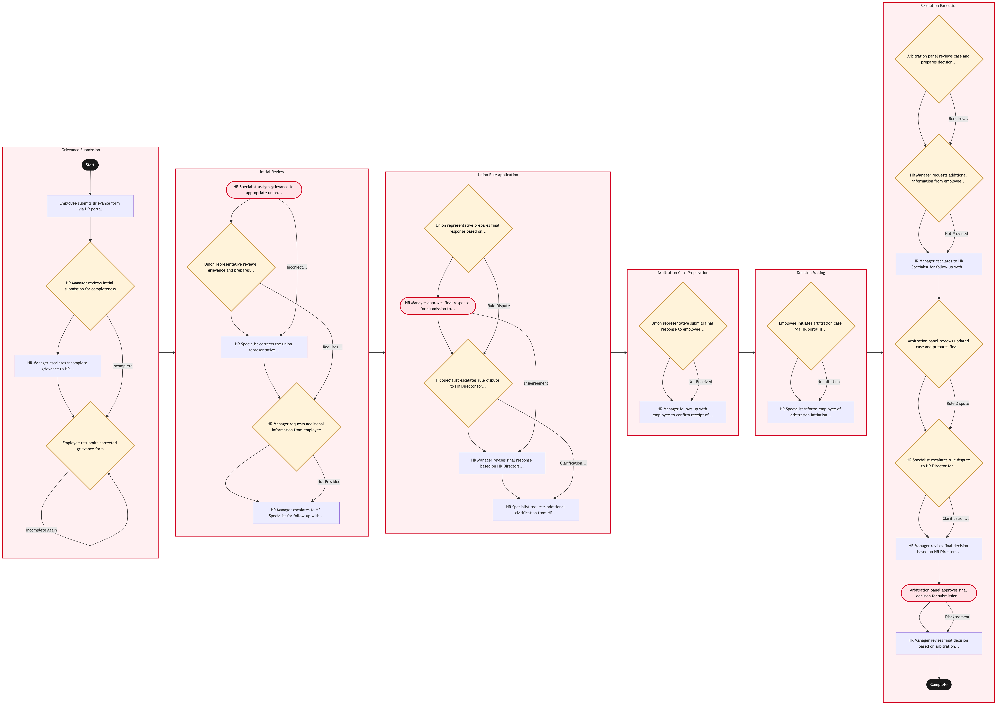

Updated 2026-08-21
Grievance and Arbitration Case Management
Process flow
Click to zoom

Process steps
▼
Phase 1 — Grievance Submission
4 steps
| Step | Activity | Role | System | Input | Output | KPI | Dec | Exc | Pain point |
|---|---|---|---|---|---|---|---|---|---|
| 1.1 | Employee submits grievance form via HR portal | Aeroplan Member Services Agent | Microsoft 365C | Grievance form | Submitted grievance record | 24-hour submission confirmation email sent to employee | N | N | Employees often submit incomplete forms, leading to delays in processing. |
| 1.2 | HR Manager reviews initial submission for completeness | YYZ Operations Control Duty Manager | DayforceB | Submitted grievance record | Review notes and status update | Grievance reviewed within 3 business days | Y | N | Managers may overlook critical details, causing delays. |
| 1.3 | HR Manager escalates incomplete grievance to HR Specialist for clarification | YYZ Operations Control Duty Manager | Microsoft 365C | Review notes and status update | Clarification request sent to employee | Clarification request sent within 24 hours of review | N | N | Employee may not respond promptly, causing further delays. |
| 1.4 | Employee resubmits corrected grievance form | Aeroplan Member Services Agent | Microsoft 365C | Clarification request and employee response | Updated grievance record | Resubmitted form received within 7 days of clarification request | Y | N | Employees may continue to submit incomplete forms, leading to multiple escalations. |
▼
Phase 2 — Initial Review
5 steps
| Step | Activity | Role | System | Input | Output | KPI | Dec | Exc | Pain point |
|---|---|---|---|---|---|---|---|---|---|
| 2.1 | HR Specialist assigns grievance to appropriate union representative | APPRA Adjudicator | DayforceB | Updated grievance record | Union representative assigned and case status updated | Grievance assigned within 1 business day of resubmission | N | Y | Incorrect assignment can lead to delays in the union's response. |
| 2.2 | Union representative reviews grievance and prepares initial response | APPRA Adjudicator | DayforceB | Assigned grievance record | Initial response document | Response prepared within 5 business days of assignment | Y | N | Union representatives may require additional information, causing delays. |
| 2.3 | HR Specialist corrects the union representative assignment and reassigns case | APPRA Adjudicator | DayforceB | Incorrect assignment notes | Corrected assignment and updated case status | Case reassigned within 1 business day of correction | N | N | Manual corrections can introduce human error. |
| 2.4 | HR Manager requests additional information from employee | YYZ Operations Control Duty Manager | Microsoft 365C | Initial response document and additional info request | Additional information provided by employee | Information requested within 10 business days of request | Y | N | Employees may not provide necessary information promptly. |
| 2.5 | HR Manager escalates to HR Specialist for follow-up with employee | YYZ Operations Control Duty Manager | Microsoft 365C | Additional info request and employee response | Follow-up email sent to employee | Follow-up email sent within 24 hours of request | N | N | Employee may not respond promptly, causing further delays. |
▼
Phase 3 — Union Rule Application
5 steps
| Step | Activity | Role | System | Input | Output | KPI | Dec | Exc | Pain point |
|---|---|---|---|---|---|---|---|---|---|
| 3.1 | Union representative prepares final response based on additional information | APPRA Adjudicator | DayforceB | Final information and initial response document | Final response document | Final response prepared within 5 business days of receiving additional info | Y | N | Union representatives may not interpret rules correctly, leading to disputes. |
| 3.2 | HR Manager approves final response for submission to employee | YYZ Operations Control Duty Manager | DayforceB | Final response document | Approved final response and status update | Response approved within 1 business day of preparation | N | Y | Managers may disagree with union interpretations, causing delays. |
| 3.3 | HR Specialist escalates rule dispute to HR Director for review | APPRA Adjudicator | DayforceB | Rule dispute notes | Review and decision from HR Director | Decision made within 2 business days of escalation | Y | N | HR Directors may require further clarification, causing delays. |
| 3.4 | HR Manager revises final response based on HR Director's review | YYZ Operations Control Duty Manager | DayforceB | HR Director's decision and final response document | Revised final response document | Response revised within 1 business day of review | N | N | Manual revisions can introduce human error. |
| 3.5 | HR Specialist requests additional clarification from HR Director | APPRA Adjudicator | DayforceB | Clarification request and HR Director's response | Clarified rule interpretation | Clarification provided within 1 business day of request | N | N | HR Directors may not respond promptly, causing further delays. |
▼
Phase 4 — Arbitration Case Preparation
2 steps
| Step | Activity | Role | System | Input | Output | KPI | Dec | Exc | Pain point |
|---|---|---|---|---|---|---|---|---|---|
| 4.1 | Union representative submits final response to employee via HR portal | APPRA Adjudicator | Microsoft 365C | Revised final response document | Response sent to employee | Response sent within 24 hours of approval | Y | N | Employees may not receive the response promptly, leading to confusion. |
| 4.2 | HR Manager follows up with employee to confirm receipt of response | YYZ Operations Control Duty Manager | Microsoft 365C | Confirmation request and employee response | Confirmation of receipt | Follow-up email sent within 24 hours of response submission | N | N | Employees may not respond promptly, causing further delays. |
▼
Phase 5 — Decision Making
2 steps
| Step | Activity | Role | System | Input | Output | KPI | Dec | Exc | Pain point |
|---|---|---|---|---|---|---|---|---|---|
| 5.1 | Employee initiates arbitration case via HR portal if unsatisfied with final response | Aeroplan Member Services Agent | Microsoft 365C | Final response and arbitration request form | Arbitration case record | Arbitration initiated within 7 days of final response receipt | Y | N | Employees may not initiate arbitration promptly, leading to prolonged cases. |
| 5.2 | HR Specialist informs employee of arbitration initiation process and timeline | APPRA Adjudicator | Microsoft 365C | Arbitration request form | Initiation email sent to employee | Email sent within 24 hours of arbitration request | N | N | Employees may not understand the process, causing confusion. |
▼
Phase 6 — Resolution Execution
8 steps
| Step | Activity | Role | System | Input | Output | KPI | Dec | Exc | Pain point |
|---|---|---|---|---|---|---|---|---|---|
| 6.1 | Arbitration panel reviews case and prepares decision document | APPRA Adjudicator | DayforceB | Arbitration case record | Decision document | Decision prepared within 30 days of initiation | Y | N | Arbitration panels may require additional information, causing delays. |
| 6.2 | HR Manager requests additional information from employee for arbitration panel | YYZ Operations Control Duty Manager | Microsoft 365C | Additional info request and employee response | Updated arbitration case record | Information requested within 10 business days of request | Y | N | Employees may not provide necessary information promptly. |
| 6.3 | HR Manager escalates to HR Specialist for follow-up with employee | YYZ Operations Control Duty Manager | Microsoft 365C | Additional info request and employee response | Follow-up email sent to employee | Follow-up email sent within 24 hours of request | N | N | Employee may not respond promptly, causing further delays. |
| 6.4 | Arbitration panel reviews updated case and prepares final decision document | APPRA Adjudicator | DayforceB | Updated arbitration case record | Final decision document | Decision prepared within 10 days of receiving additional info | Y | N | Arbitration panels may not interpret rules correctly, leading to disputes. |
| 6.5 | HR Specialist escalates rule dispute to HR Director for review | APPRA Adjudicator | DayforceB | Rule dispute notes | Review and decision from HR Director | Decision made within 2 business days of escalation | Y | N | HR Directors may require further clarification, causing delays. |
| 6.6 | HR Manager revises final decision based on HR Director's review | YYZ Operations Control Duty Manager | DayforceB | HR Director's decision and final decision document | Revised final decision document | Response revised within 1 business day of review | N | N | Manual revisions can introduce human error. |
| 6.7 | Arbitration panel approves final decision for submission to employee | APPRA Adjudicator | DayforceB | Revised final decision document | Approved final decision and status update | Decision approved within 1 business day of preparation | N | Y | Arbitration panels may disagree with HR interpretations, causing delays. |
| 6.8 | HR Manager revises final decision based on arbitration panel's approval | YYZ Operations Control Duty Manager | DayforceB | Arbitration panel's approval and final decision document | Revised final decision document | Response revised within 1 business day of approval | N | N | Manual revisions can introduce human error. |
Swim lanes
Aeroplan Member Services Agent1.1 1.4 5.1
YYZ Operations Control Duty Manager1.2 1.3 2.4 2.5 3.2 3.4 4.2 6.2 6.3 6.6 6.8
APPRA Adjudicator2.1 2.2 2.3 3.1 3.3 3.5 4.1 5.2 6.1 6.4 6.5 6.7
Systems touched
Microsoft 365CDayforceB
Key performance indicators
- 24-hour submission confirmation email sent to employee
- Grievance reviewed within 3 business days
- Grievance assigned within 1 business day of resubmission
- Response prepared within 5 business days of assignment
- Final response approved within 1 business day of preparation
Risks and control points
- Inconsistent application of union rules across bargaining units
- Delays in communication and follow-up with employees
- Errors in manual data entry and corrections
- Complexity in handling multiple exceptions and escalations
- Potential for legal disputes arising from arbitration decisions
Air Canada Process Wiki — process and systems reference compiled from public sources
for IT Application Management and User Support pre-sales discovery.
Built 2026-08-21. Every system carries an evidence tier: tier C is an industry pattern and tier U is an open
question, and neither should be asserted as fact about Air Canada without confirmation in discovery.
Not affiliated with or endorsed by Air Canada. Air Canada, Aeroplan and Altitude are trademarks of Air Canada.